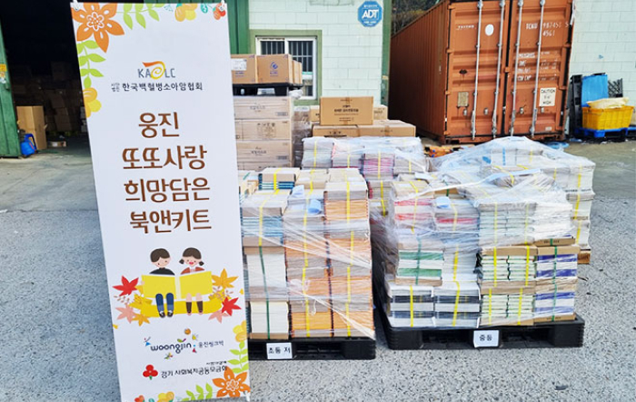
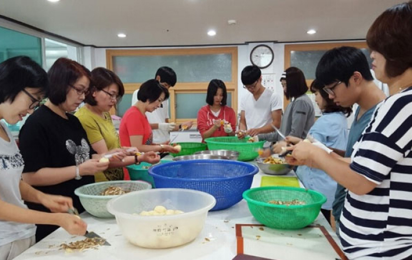

사회공헌

- 소아암 어린이를 위한
착한BOOK 상자 만들기 활동
- 웅진 임직원은 매년 창립기념일마다 소아암 어린이를 위한 '착한BOOK' 상자 만들기 활동을 진행하고 있습니다. ‘착한BOOK’ 상자에는 웅진씽크빅 도서, 학용품, 응원 편지 등이 담겨있고, 소아암 어린이들의 각 가정으로 전달돼 치료 과정 중에도 독서와 학습을 지속할 수 있도록 지원합니다.
- 임직원 봉사 동호회
천사지기 활동
- 웅진 임직원 봉사 동호회인 ‘천사지기‘는 2000년대 초부터 현재까지 약 20년간 양평에 위치한장애인 보금자리를 후원하고 있습니다. 매월 성금 전달은 물론, 식사 대접, 청소 등 다양한 봉사활동을 진행하고 있으며, 1:1매칭 그랜트를 통해 임직원 기부금의 100%를 추가 기부하고 있습니다.
